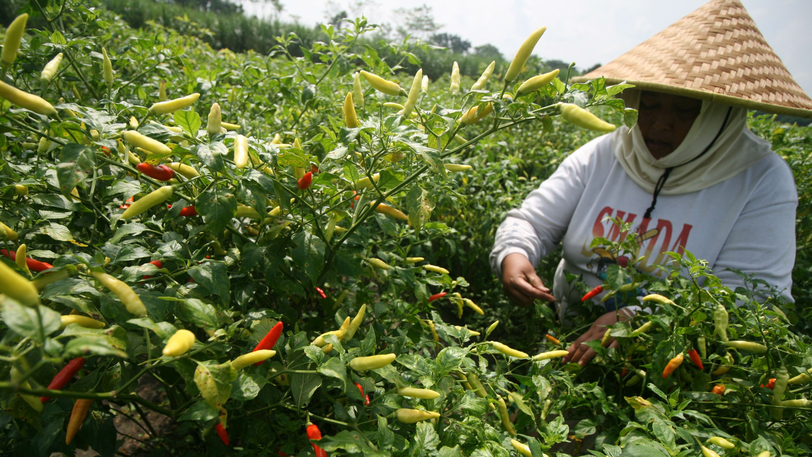

Deteksi Penyakit
Tanaman Cabai
Jangan biarkan hasil panen Anda terancam. PakarCabai hadir untuk membantu Anda mengenali masalah pada tanaman cabai dengan lebih mudah.
Mulai Diagnosa Sekarang
Bagaimana Sistem Bekerja?
Sistem ini dirancang dengan alur diagnosis yang sederhana agar Anda dapat fokus pada penanganan tanaman, tanpa perlu memahami proses sistem yang rumit.
1. Amati & Pilih Gejala
Amati kondisi fisik tanaman cabai Anda. Pilih gejala yang terlihat pada tanaman sesuai dengan daftar yang tersedia.
2. Proses Diagnosis
Sistem akan menganalisis gejala yang Anda pilih dengan mencocokkannya pada basis pengetahuan penyakit tanaman cabai yang telah ditentukan oleh pakar.
3. Rekomendasi Tindakan
Setelah proses diagnosis selesai, sistem akan menampilkan hasil berupa jenis penyakit beserta saran penanganan yang dapat dilakukan.
Daftar Penyakit Tanaman Cabai
Berikut adalah daftar penyakit yang umum menyerang tanaman cabai. Klik pada salah satu nama penyakit untuk melihat informasi lengkap mengenai gejala, penyebab, dan cara penanganannya.
Siap Mengamankan Kebun Anda?
Makin cepat penyakit terdeteksi, makin besar peluang panen Anda selamat. Gunakan sistem pakar kami sekarang gratis.
Mulai Konsultasi Gratis